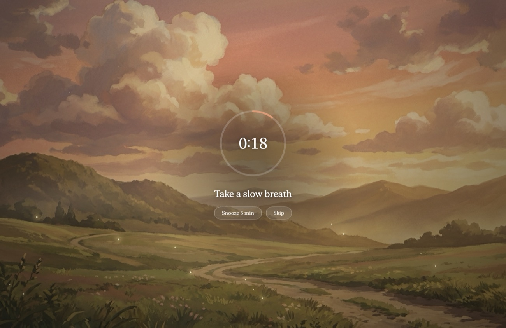
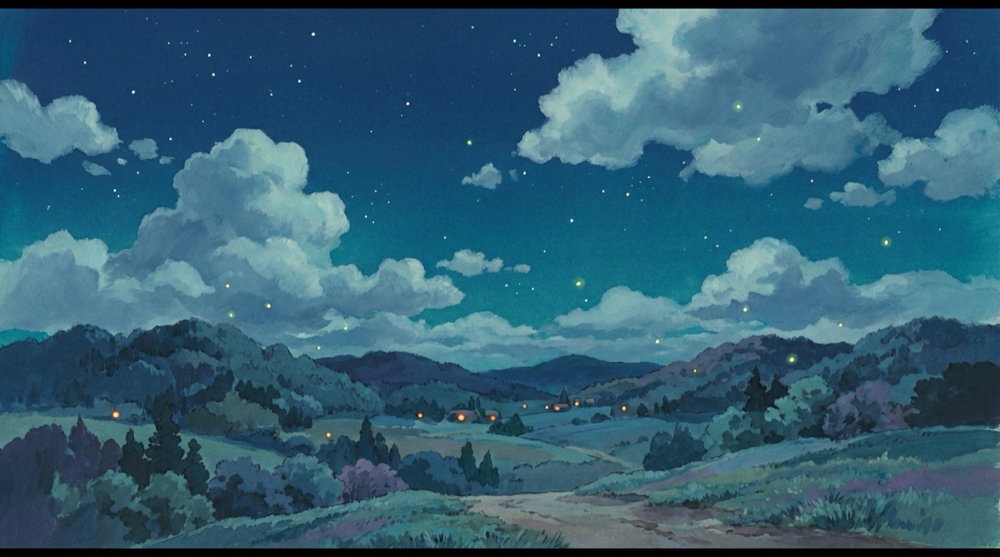
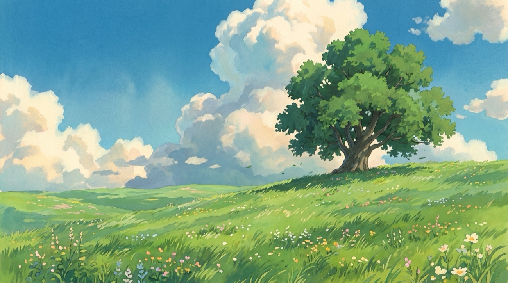
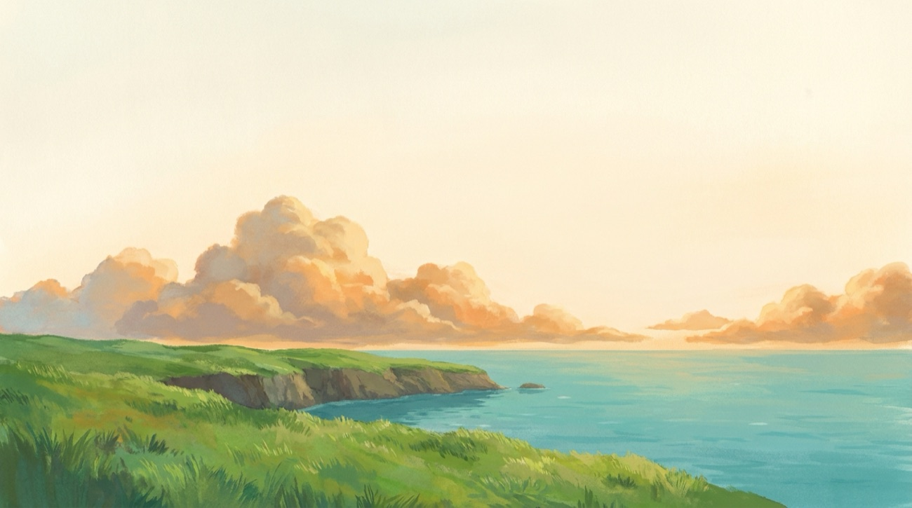
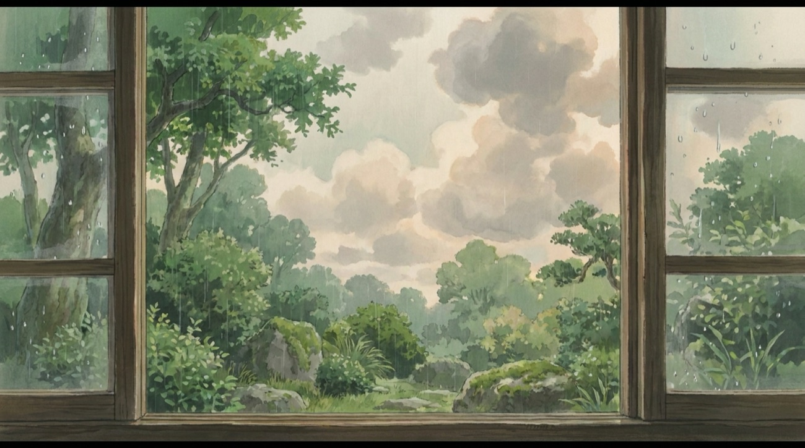
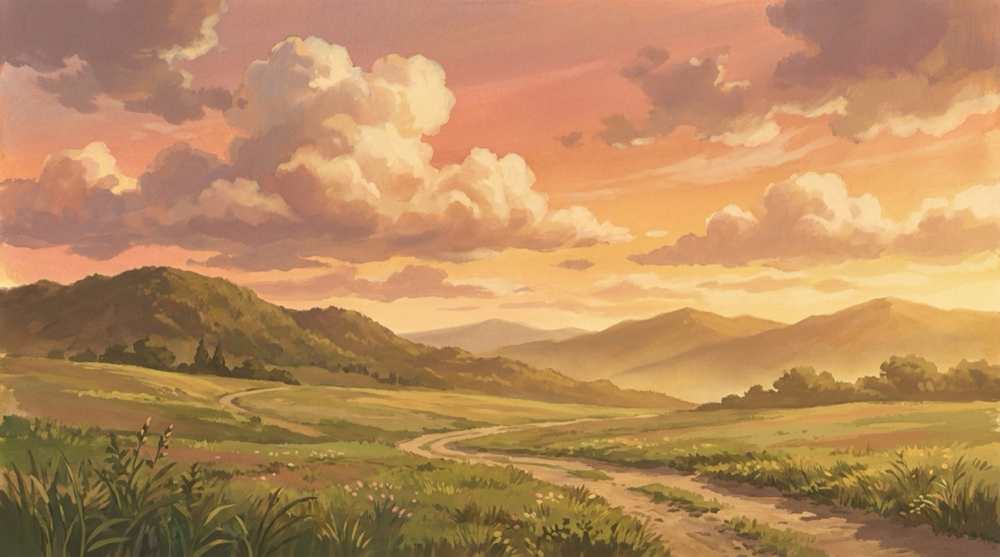
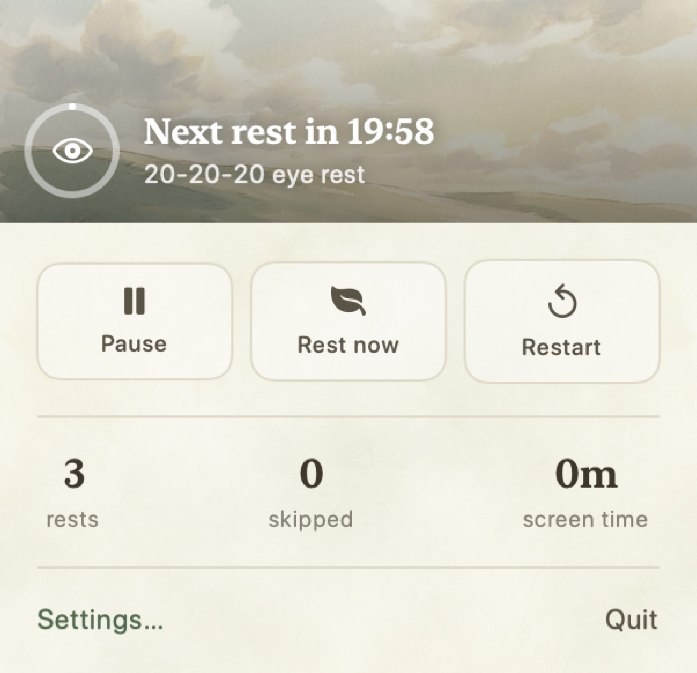

macOS · 20-20-20
The eye-rest app you'll actually look forward to.
Eye Rest follows the 20-20-20 rule for you — and every break fades your Mac into a hand-painted scene worth pausing for. Rest your eyes without a reminder you'll want to turn off.
Download for Mac — FreemacOS 14+ · Free to start · Pro is $14.99 once, no subscription

The problem
You know the 20-20-20 rule. You never actually do it.
Every 20 minutes, look 20 feet away for 20 seconds. Simple — and impossible to remember when you're deep in work. So your eyes end the day dry, tired, and aching.
You've probably tried a break-reminder app before. And turned it off within a week, because it nagged you with an ugly pop-up at the worst moment.
The idea
What if the break was the best part of your hour?
Eye Rest reminds you to look away — then gives you something worth looking at. When it's time to rest, your screen doesn't flash a warning. It fades into a full-screen, hand-painted scene, alive with gentle motion: fireflies drifting at dusk, god-rays through summer leaves, rain tracing down glass.
Twenty seconds later, you're back — eyes rested, and oddly a little calmer. Because a break you enjoy is a break you keep taking.
Six scenes
One for every kind of afternoon.
Eye Rest picks the scene that fits the time of day — or you choose your favorite.

Fireflies at night God-rays
God-rays
Meadow
Sea shimmer
Rain on glass
Golden duskWhy it sticks
Built to be kept, not tolerated.
Living scenes, by the hour
Hand-painted backdrops that shift with your day and breathe with their own animation. You look forward to the break instead of dismissing it.
It knows when to stay quiet
Smart pause skips your breaks during meetings and video. Idle detection won't nag an empty chair. Office-hours keeps it to your workday.
Gentle nudges, never alarms
A soft prompt to blink, a quiet cue to fix your posture, a breathing ring to pace the pause. Care, not scolding.
See your streak grow
Screen time, rest streaks, and a 7-day chart — proof you're finally taking care of your eyes.
Native and feather-light
Built in SwiftUI, lives in your menu bar, no Electron. Fast, quiet, and Mac to the core.
Yours forever
One payment, $14.99. No subscription, ever. Try all of it free for 14 days first.
How it works
Set it once. Forget it's there — until you're glad it is.
Download and open
Eye Rest tucks into your menu bar with a live countdown.
Keep working
It watches the clock so you don't have to — and steps aside for meetings and video.
Look away
Every 20 minutes, your screen becomes a scene. Rest, breathe, return.
Always there
In your menu bar, never in your way.
A quiet countdown to your next rest sits in the menu bar. Glance any time, pause when you need to, or take a break early. No dock icon, no window to manage — just a calm nudge on the 20-20-20 rhythm.

Pricing
Free to start. $14.99 to keep it forever.
Free
- 20-20-20 menu-bar timer
- 1 time-of-day scene
- Idle pause
Pro
- All 6 scenes + picker
- Living animation
- Smart pause + office hours
- Blink & posture nudges
- Stats & streaks
14-day full trial · buy once, own it · no subscription
Questions
Questions you're probably asking.
Why pay when Stretchly is free?
Free break apps get uninstalled, because using them is a chore. Eye Rest is one you'll keep — and you get 14 days of everything, free, before you decide. One payment, $14.99. No subscription, ever.
Won't full-screen breaks wreck my focus?
They'd wreck it if they hit during a call or a video. They won't — Eye Rest pauses itself for meetings, playback, and idle time, and only runs during your office hours. You set the pace.
Doesn't f.lux already handle my eyes?
f.lux warms your screen's color. It can't make you look away — and looking away is the part that actually rests your eyes. Different job.
What do I need to run it?
macOS 14 or later. Eye Rest runs quietly in your menu bar. No iOS, Windows, or web version yet.
Give your eyes something to look forward to.
Your next break is 20 minutes away. Make it a good one.
Free to start · 14-day full trial · $14.99 once, no subscription · macOS 14+